Best Fit
Who should use aircraft and when it belongs in the fleet journey.
Fleet / 01
Fleet opens as a clear aviation decision hub: what Aero offers, who it helps, why it matters, and which route to take first.
The first screen combines positioning, proof, primary action, and fast internal navigation, so people can act immediately or compare the rest of the fleet route with context.
Aerospace velocity hero
Select the closest route and Aero keeps the next step, proof, and follow-up expectation aligned with safety and premium reliability.
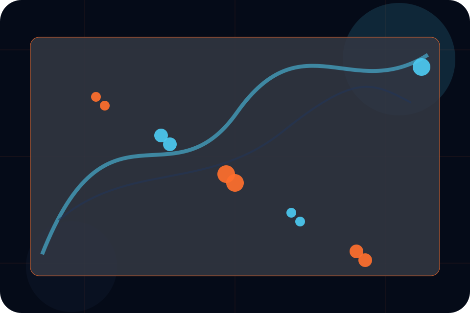
Fleet / 02
Aircraft explains the practical scope, best-fit situations, and expected outcome so aviation visitors can compare options without decoding jargon.
The section keeps the offer concrete: what is included, who it is best for, what decision it supports, and which linked route gives the deeper detail.
Explore FleetWho should use aircraft and when it belongs in the fleet journey.
The practical benefit visitors should expect after choosing this route.
Where to compare details, pricing, support, or contact options before committing.
Fleet / 03
Capacity explains the practical scope, best-fit situations, and expected outcome so aviation visitors can compare options without decoding jargon.
The section keeps the offer concrete: what is included, who it is best for, what decision it supports, and which linked route gives the deeper detail.
Explore Fleet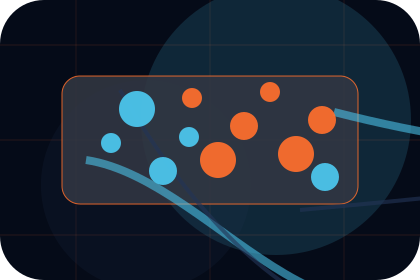
Who should use capacity and when it belongs in the fleet journey.
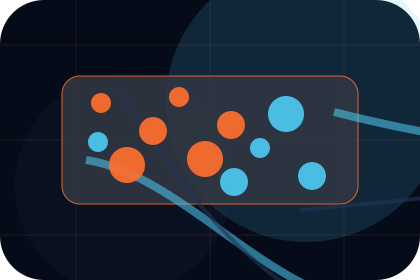
The practical benefit visitors should expect after choosing this route.
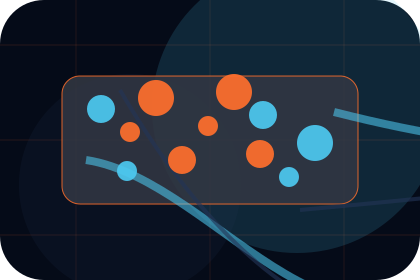
Where to compare details, pricing, support, or contact options before committing.
Fleet / 04
Range explains the practical scope, best-fit situations, and expected outcome so aviation visitors can compare options without decoding jargon.
The section keeps the offer concrete: what is included, who it is best for, what decision it supports, and which linked route gives the deeper detail.
Explore FleetWho should use range and when it belongs in the fleet journey.
The practical benefit visitors should expect after choosing this route.
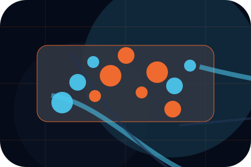
Where to compare details, pricing, support, or contact options before committing.
Fleet / 05
Specs explains the practical scope, best-fit situations, and expected outcome so aviation visitors can compare options without decoding jargon.
The section keeps the offer concrete: what is included, who it is best for, what decision it supports, and which linked route gives the deeper detail.
Explore FleetWho should use specs and when it belongs in the fleet journey.
The practical benefit visitors should expect after choosing this route.
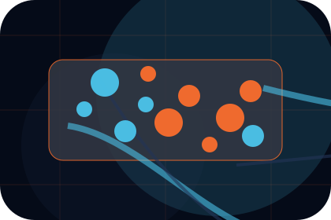
Where to compare details, pricing, support, or contact options before committing.
Fleet / 06
Interiors explains the practical scope, best-fit situations, and expected outcome so aviation visitors can compare options without decoding jargon.
The section keeps the offer concrete: what is included, who it is best for, what decision it supports, and which linked route gives the deeper detail.
Explore FleetAero structures interiors around best fit, what changes, and a clear next route so visitors can compare the block quickly before they request a charter.
Request CharterFleet / 07
Availability explains the practical scope, best-fit situations, and expected outcome so aviation visitors can compare options without decoding jargon.
The section keeps the offer concrete: what is included, who it is best for, what decision it supports, and which linked route gives the deeper detail.
Explore FleetWho should use availability and when it belongs in the fleet journey.
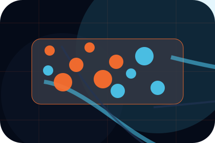
The practical benefit visitors should expect after choosing this route.
Where to compare details, pricing, support, or contact options before committing.
Fleet / 08
Maintenance explains the practical scope, best-fit situations, and expected outcome so aviation visitors can compare options without decoding jargon.
The section keeps the offer concrete: what is included, who it is best for, what decision it supports, and which linked route gives the deeper detail.
Explore FleetWho should use maintenance and when it belongs in the fleet journey.
Fleet / 09
Gallery explains the practical scope, best-fit situations, and expected outcome so aviation visitors can compare options without decoding jargon.
The section keeps the offer concrete: what is included, who it is best for, what decision it supports, and which linked route gives the deeper detail.
Explore Fleet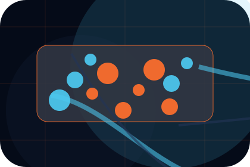
Who should use gallery and when it belongs in the fleet journey.
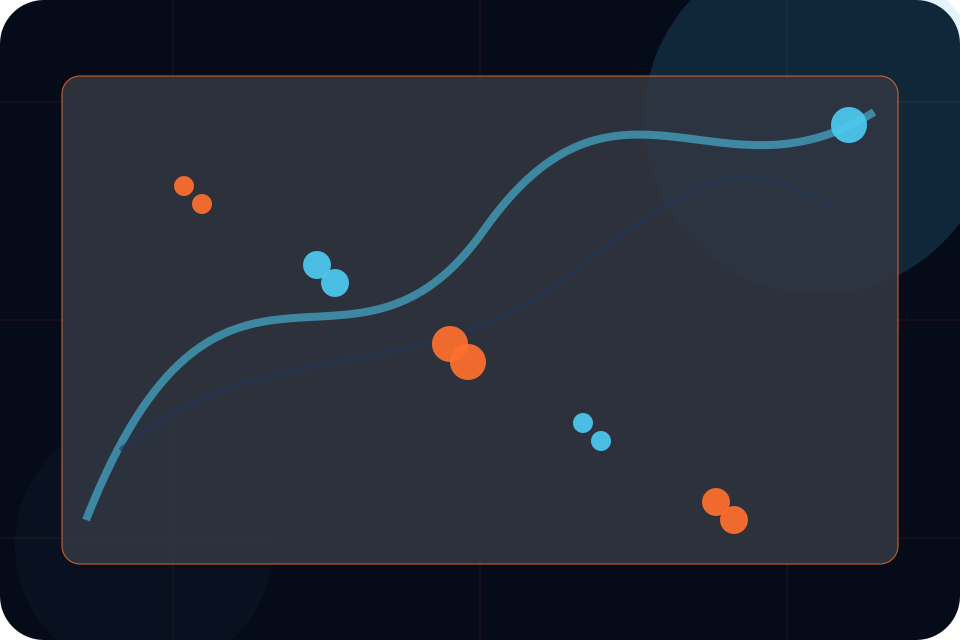
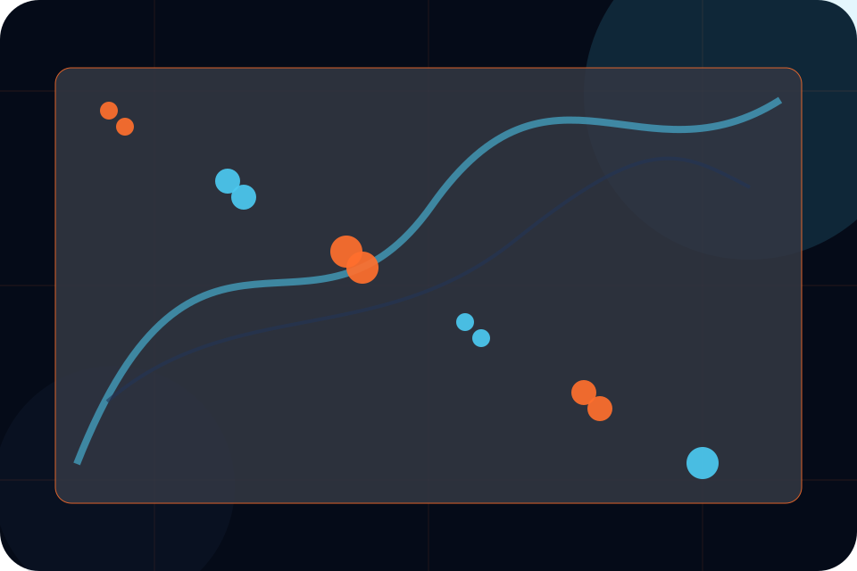
Aerospace velocity hero
Select the closest route and Aero keeps the next step, proof, and follow-up expectation aligned with safety and premium reliability.
Fleet / 10
Aero closes the fleet route with a clear action, a quick reminder of the value, and a low-friction way to request a charter.
Visitors who are ready can use the primary action. Visitors who are still comparing can scan the section links, proof, and support routes before they request a charter.
Request CharterThe final block keeps the choice simple: act now, compare one more proof route, or send enough detail for a focused response.
Request Chartersafety and premium reliability
An aviation site with speed-led hero, aircraft spec cards, route modules, safety proof, and charter enquiry. Fleet ends with a direct path to request a charter, plus enough context for visitors who still need to compare.
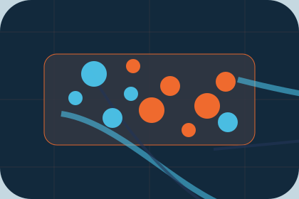
Request CharterInformation is provided for planning and should be reviewed for the final client, location, and operating rules.